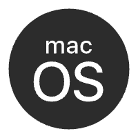

V0.4.0
2026 年 10 月 5 日
通用更新
- 新增 新增应用图标角标展示未读文章数量功能（Windows 平台不支持）
- 新增 新增本地诊断中心，可通过设置-关于-诊断中心进入。诊断中心可查看软件运行日志、性能和缓存情况，必要时可导出日志方便开发者排查问题。
- 新增 小组件新增刷新按钮反馈
- 优化 优化小组件的显示逻辑，小组件中文章将显示标题以及正文部分内容
- 优化 优化查看大图中的手势逻辑
- 优化 优化查看大图中普通图片和长图的显示逻辑

macOS- 修复 修复小组件一直显示“请在应用中设置特别关心”的问题
- 修复 修复小组件中订阅源图标可能因为其中某个订阅源刷新失败导致所有订阅源无法显示图标的问题
- 修复 修复小组件中文章已读但是未从小组件中消失的问题
- 修复 小组件点击刷新按钮无反应问题
iOS
- 修复 修复小组件一直显示“请在应用中设置特别关心”的问题
- 修复 修复小组件中订阅源图标可能因为其中某个订阅源刷新失败导致所有订阅源无法显示图标的问题
- 修复 修复小组件中文章已读但是未从小组件中消失的问题
- 修复 修复深色模式下设置页面状态栏区域背景颜色与下方颜色不统一问题
- 修复 小组件点击刷新按钮无反应问题
Android
- 修复 修复小组件一直显示“请在应用中设置特别关心”的问题
- 修复 修复小组件中订阅源图标可能因为其中某个订阅源刷新失败导致所有订阅源无法显示图标的问题
- 修复 修复小组件中文章已读但是未从小组件中消失的问题
- 修复 修复深色模式下设置页面状态栏区域背景颜色与下方颜色不统一问题
HarmonyOS
- 修复 修复网络添加页面部分控件显示层级异常的问题
- 修复 修复阅读页查看大图时保存图片按钮消失的问题
- 修复 修复深色模式下设置页面状态栏区域背景颜色与下方颜色不统一问题